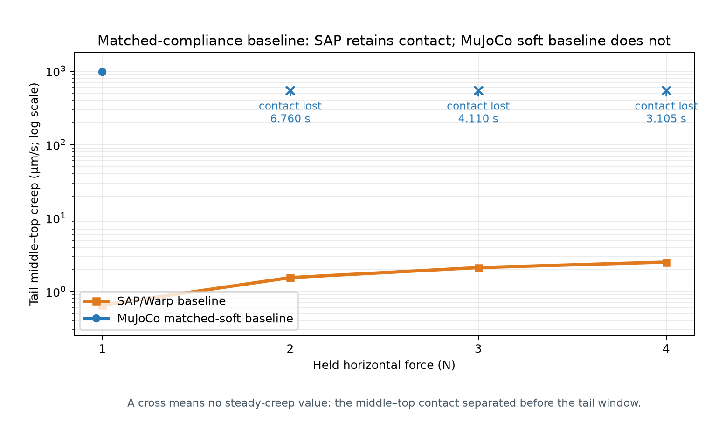
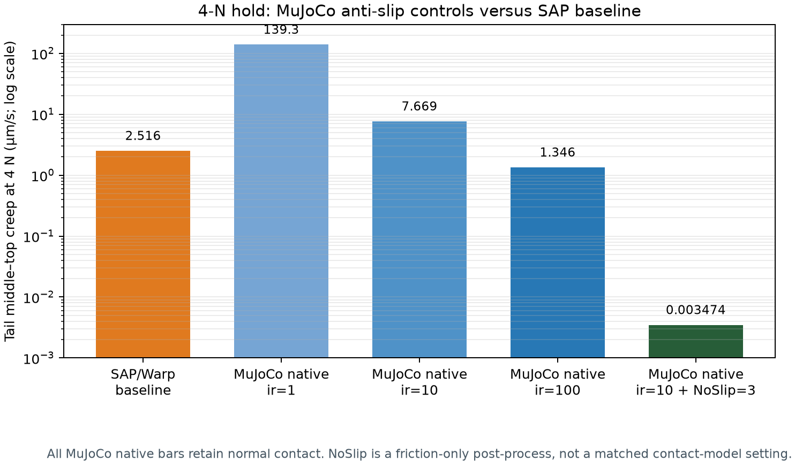
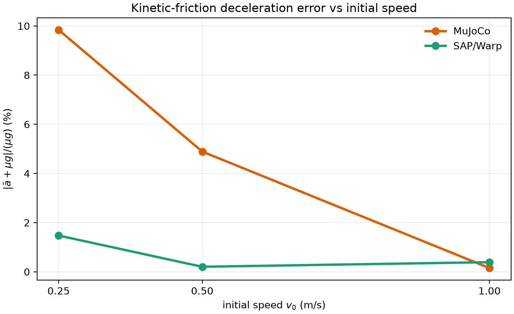
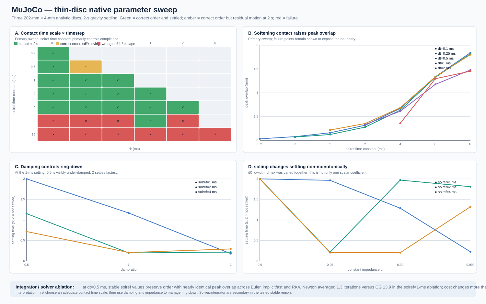
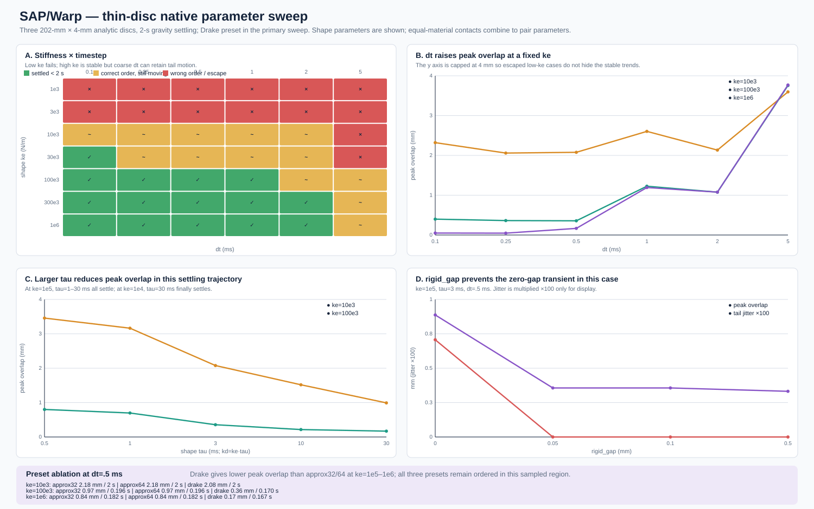

Research report · September 2026
SAP Warp vs MuJoCo:
contact-rich simulation benchmark
A controlled comparison of contact parameterization, friction, dynamic impact, collision representation, and manipulation robustness.
Research question. Which physical regimes does each formulation reproduce reliably, how transferable are its parameters, and what failure modes appear when contact becomes stiff, dynamic, geometrically complex, or embedded in a manipulation task?
1. Executive Summary
Bottom line
SAP Warp and MuJoCo show complementary strengths rather than a consistent accuracy ordering.
SAP Warp exposes more material-like contact parameters and, in the tested compliant-contact regime, follows ideal Coulomb friction more directly near the sticking/sliding boundary.
MuJoCo is more robust in near-rigid, high-stiffness multi-contact and provides stronger native controls for suppressing frictional drift.
Dynamic impact currently favors MuJoCo when comparing the same absolute timestep, but the two engines exhibit substantially different contact timescales; this difference must be controlled before attributing the result purely to numerical integration.
In manipulation, low-level contact advantages do not translate directly into task-level dominance. SAP Warp showed more Coulomb-like friction behavior in several controlled tests, but a complete grasp also depends on control, geometry, and motion. In the tested Panda setups, SAP Warp handled a wider range of object masses and friction values and drifted less during long holds, while MuJoCo tolerated pose errors better and kept successful short transfers more tightly aligned. The stronger choice therefore depends on the task outcome being measured.
Across the study, collision representation and contact-manifold behavior often matter as much as the nominal contact formulation itself.
2. Friction
2.1 Sub-Coulomb sticking and creep
Under ideal Coulomb friction,
should permit zero-velocity sticking.
Baseline here does not mean factory defaults. It means the frozen primary task configurations: SAP Warp uses its stable native contact setting; MuJoCo is deliberately calibrated to a similarly soft box--plane normal response, but has NoSlip=0 and no elevated impratio anti-slip tuning.
3-D companion: three-box 4-N hold. The blocks replay the same hold at dt=0.5 ms; SAP Warp uses pair ke=1e4 N/m and τ=3 ms.
Body poses are reconstructed from logged interface slip and vertical velocity, not directly recorded absolute poses. Use the figures below and the friction report for force, contact-duty, and creep metrics. Source video ↗

However, this is not an engine-level limitation. A dedicated MuJoCo anti-slip ablation at the same 4-N hold shows that residual creep strongly depends on:
impratiosolreffriction- NoSlip post-processing
- Contact-manifold and solver settings

Increasing impratio reduced MuJoCo residual creep by about one order of magnitude per tested decade; NoSlip suppressed it by several further orders of magnitude.
2.2 Kinetic friction
For ideal Coulomb sliding under continuous contact,
In this benchmark, both engines show intermittent post-release normal-contact switching, so the result is not a pure friction-law comparison.
At dt=0.5 ms, SAP Warp remains close to the ideal constant-deceleration trajectory across all tested speeds. MuJoCo shows larger deviation at low speed, improves as the initial sliding speed increases, and reaches comparable accuracy at v0=1 m/s. Its deceleration error decreases from 9.84% at 0.25 m/s to 4.89% at 0.5 m/s and 0.15% at 1.0 m/s.

μg.3-D companion: free-sliding blocks. Both panes replay the recorded block positions after release at vx=1 m/s, μ=0.5, and dt=0.5 ms.
This shows object motion; the force and velocity evidence remains in the telemetry clip above. Source video ↗
2.3 Force-matched simple pinch
Simple pinch compares approximately matched measured normal preload instead of identical geometric pad compression.
For an ideal symmetric pinch:
The theoretical support threshold is:
In the 1-second lift plus 0.25-second hold, success requires at least 57 mm of the commanded 60 mm cube lift. Mass-only boundary refinements give:
Here r uses normal force measured before lifting. SAP's N4 pass below r=1 is a finite-time task outcome, not a static sub-Coulomb equilibrium: normal force rises during the lift and the cube retains slip and downward tail velocity.
3-D control: SAP clearly failing versus passing. Both panes use SAP Warp with measured preload N=4.040 N/side and μ=0.4. The heavier cube has r=0.808 and slips; the lighter cube has r=1.010 and passes.
This is a visually separated SAP-only sanity check, not the refined boundary or a MuJoCo–SAP ranking. Source video ↗
3-D MuJoCo N4 boundary: nearest failure versus minimum sampled success. The same model and contact settings give r=1.040878, 56.973 mm follow (fail) versus r=1.040904, 57.013 mm (pass). Only cube mass changes.
The two rendered motions are almost indistinguishable. Only the final 56.90–57.10 mm measurement scale is magnified, not the geometry. Cube height is logged; pad height is integrated from logged velocity; unlogged orientation stays nominal in this replay. Source video ↗
3-D control: both engines lift successfully. At m=0.2718 kg and μ=0.4, measured margins are r=1.176 for MuJoCo and r=1.212 for SAP Warp; both retain the cube through the lift.
A representative task-success comparison, distinct from the near-threshold case above. Source video ↗
3. Dynamic Contact
3.1 Impact and restitution
A 1-kg, frictionless sphere impacts a plane through one normal degree of freedom. At the reference condition, each engine was independently calibrated to:
The native parameters were then frozen. Both engines retain e≈0.8 across the tested impact-speed range, so the observed difference below is a timestep-transfer effect in this linear single-contact setup.
With the contact timescale controlled, MuJoCo remains near its calibrated restitution as timestep increases: e=0.7999 → 0.8027 from dt=0.01 → 0.5 ms. SAP Warp falls from e=0.8019 to 0.7452 over the same range, despite both measured impulse episodes remaining approximately 30 ms.
After matching restitution and contact duration, the tested MuJoCo configuration preserves its calibrated rebound ratio throughdt=0.5 ms; the tested SAP Warp configuration loses rebound energy asdtincreases. This is a calibrated transfer result for one frictionless scalar contact, not a general ranking of physical accuracy.
Video: equal-timescale coarse-step impact. A 1.5-second opening card gives the complete timestep-transfer table; the slow-motion replay then shows the dt=0.5 ms condition. Both engines have tc≈30 ms; MuJoCo gives e=0.8027, SAP Warp e=0.7452.
This is a controlled restitution-transfer demo, not an absolute-material ground-truth comparison. Source video ↗
3-D companion: sphere–plane impact. A compact 3-second slow-motion replay of the equal-timescale, eeff=0.8-calibrated comparison at evaluation dt=0.5 ms.
Offline pose replay; use the telemetry clip above for restitution, force, and impulse. Source video ↗
A broader methodological lesson follows:
3.2 Repeated elastic impact
In repeated bouncing, SAP Warp accumulated finite-step dissipation even with nominally non-dissipative material settings, while MuJoCo retained substantially more mechanical energy in the tested configuration.
This suggests particular caution for:
- High-restitution collisions
- Repeated impacts
- Hopping and bouncing
- Energy-sensitive control
- Stiff contact with short contact duration
The result does not imply that SAP Warp is physically incorrect. It shows that its finite-step compliant contact model can materially affect rebound and energy retention and therefore should be calibrated when those quantities matter.
Video: repeated elastic bounce. The right-hand curve now samples energy only at free-flight rebound apexes, avoiding misleading contact-compression valleys. At dt=0.5 ms, MuJoCo retains a final energy ratio of 1.00485, while SAP Warp reaches 0.83403 in the selected native configurations.
The animated sphere is ball 0; the apex curve uses the complete 49-ball system. The terminal star is the final 20-s energy ratio. Source video ↗
3-D companion: repeated elastic bounce. Both panels visualize the repeated-impact trajectories at dt=0.5 ms.
The 49 identical balls are visual replicas of the recorded representative ball-0 height, not 49 separately logged pose tracks. System-energy evidence remains in the telemetry clip above. Source video ↗
4. Peg-in-Hole
4.1 Analytic cavity: contact solver control
The analytic square cavity uses primitive box contacts and therefore provides a clean multi-contact insertion control.
Both engines successfully insert a centered peg.
For SAP Warp, the initially failing 1-mm-offset case became stable after reducing rigid_gap from 1 mm to 0.1–0.5 mm.
rigid_gap is a contact-activation skin: it determines how far apart two surfaces may be before SAP Warp creates a contact candidate for the solver. It is not physical clearance, geometric penetration, or material deformation. When it approaches the remaining physical side clearance, contact can be activated on the wall before the intended insertion motion has entered the cavity; that early impulse changes the trajectory.
Video: SAP Warp rigid-gap ablation, same 1-mm-offset task. Only rigid_gap changes. Left: 0.5 mm, which is below the 1-mm remaining side clearance, enters and rests. Right: 1.0 mm, equal to that clearance, activates side-wall contact too early; the peg is laterally ejected and falls through.
This does not make 1 mm universally invalid. It shows that the activation distance must be chosen relative to the smallest intended geometric clearance of the task. Source video ↗
Video: 1-mm-offset analytic cavity insertion. Both panes show the primitive cavity with 2-mm one-sided clearance; SAP Warp uses rigid_gap=0.1 mm and enters/rests without truncation.
The SAP pane is an offline pose-trace rendering, not a MuJoCo re-simulation. Source video ↗
4.2 Round concave socket
We tested the round socket with both each engine’s native concave-mesh path and a shared 32-piece CoACD collision representation. The native-path results are not scored from final depth or from a reported witness/penetration alone.
A round-socket trial is called credible only when it satisfies all of the following:
Here c is the one-sided clearance, and pmax/pfinal are the peak/final geometric penetration measures used by that experiment. Thus, an apparent entry is not automatically a valid insertion: it can be inside the socket in pose while violating clearance, overflowing contact capacity, or reporting excessive/ambiguous overlap.
Under this screen, MuJoCo’s native mesh-SDF produced 22/25 apparent entries but 0/25 credible cases; SAP Warp’s raw/watertight mesh controls likewise did not provide a valid inner-cavity witness. In the initial shared-CoACD sweep, MuJoCo had 2/25 credible cases and SAP Warp had 0/10 at its single untuned native setting (rigid_gap=1 mm).
To remove unequal tuning coverage, a follow-up gave both engines an equal 48-candidate native tuning budget on the shared 32-piece CoACD nominal hard case (c=2 mm, 1-mm offset, 1° tilt, 2 s), ranked by credible → pmax/c → final radial → stepping time, then froze each engine’s best candidate across the 10-case 5 clearance × 2 offset matrix:
Native mesh, initial CoACD matrix, and equal-budget CoACD tuning
| Protocol / representation | MuJoCo | SAP Warp | What it shows |
|---|---|---|---|
| Native concave mesh path | Mesh-SDF: 22/25 apparent entries; 0/25 credible | Raw/watertight mesh controls cannot provide a valid inner-cavity witness | Pose/depth or native witness alone is not a valid insertion metric inside the concavity. |
| Initial shared 32-piece CoACD matrix | 7/25 entered; 2/25 credible (both 2-mm-clearance cases) | 0/10 entered; 0/10 credible at untuned rigid_gap=1 mm | Untuned 1-mm activation gap blocks SAP entry; piecewise-convex geometry remains setting-sensitive. |
Equal-budget CoACD tuning (48 candidates at c=2 mm, x=1 mm, 1°) | 48/48 entered; 23/48 credible (best pmax=0.056 mm, pmax/c=0.028) | 6/48 entered; 1/48 credible at dt=0.25 ms, kpair=1e4 N/m, τpair=3 ms, rigid_gap=0.1 mm, drake (pmax=0.061 mm, pmax/c=0.031) | SAP Warp can also achieve a credible 2-mm CoACD insertion once rigid_gap and dt are tuned, though with a narrower feasible parameter band than MuJoCo. |
| Frozen best across 10-case clearance × offset matrix | 2/10 entered; 2/10 credible (passes c=2 mm at 0- and 1-mm offset; 0/8 for c ≤ 1.5 mm) | 2/10 entered; 1/10 credible (c=2 mm, x=1 mm credible; c=2 mm, x=0 mm enters and settles but has a transient pmax=15.09 mm spike; 0/8 for c ≤ 1.5 mm) | Neither frozen setting generalizes to c ≤ 1.5 mm; below 2-mm clearance, the 32-piece CoACD rim/wall manifold dominates over solver tuning in both engines. |
“Native mesh path” does not mean the same algorithm: MuJoCo uses mesh-SDF while SAP Warp's raw/watertight path uses its own mesh witness/SDF machinery. Equal-budget tuning data: MuJoCo 48-run CSV ↗ · SAP Warp 48-run CSV ↗.
c ≤ 1.5 mm. Tight tilted insertion is ultimately limited by the piecewise-convex collision manifold and contact activation rather than the contact solver alone.MuJoCo shared-CoACD (c=2 mm, x=1 mm, 1°): entered & credible versus entered but not credible. Both configurations physically enter the socket and settle near z≈38.1–38.2 mm. Only solref time constant changes: 0.75 ms keeps peak overlap at pmax=0.056 mm ≤ 0.1c (credible), whereas 4.0 ms reaches pmax=1.349 mm > 0.1c during entry (fails screen).
This illustrates why final pose/depth alone (“entered”) is insufficient without the pmax ≤ 0.1c overlap screen. Source video ↗
SAP Warp shared-CoACD (c=2 mm, x=1 mm, 1°): entered & credible versus entered but not credible. Both panes replay native SAP Warp trajectories at dt=0.25 ms, τpair=3 ms, rigid_gap=0.1 mm, drake. Both enter and settle near z≈38.3 mm with near-zero final overlap, but kpair=1e4 N/m stays at pmax=0.061 mm ≤ 0.1c (credible) while kpair=1e5 N/m experiences a transient pmax=5.384 mm overlap spike during entry.
Offline pose and telemetry replay from native SAP Warp traces; MuJoCo is used only as the visual renderer. Source video ↗
4.3 Other concave comparison: broad plate settling
Why include plates? Plate settling is an open concave task: an object can be supported at many locations in a wide bowl. It is a small scope check alongside the tight-clearance peg--socket task, not an insertion validation.
Both representations produced stable sphere settling and preserved three-plate order without escape. However, native mesh and shared 32-piece CoACD changed the ball’s supported position, stack heights, and contact manifold. CoACD therefore provides a more interpretable piecewise-convex contact representation, but it remains an approximation to the smooth bowl.
Meaning for peg-in-hole. First, stable plate settling rules out the broad claim that either engine “cannot handle concave geometry.” Second, the native-mesh/CoACD differences show that collision representation changes where and how support contacts are formed. The round peg--socket result is therefore more specific: at small clearance, the unresolved requirement is robust, geometrically correct contact activation along the inner wall—not merely whether the object ultimately receives support.
Native mesh versus shared CoACD in the open plate
| Representation | Sphere-in-plate equilibrium | Three-plate stack | What changes |
|---|---|---|---|
| Native concave mesh path | Both stable/no escape. Ball z/r: MuJoCo 26.397/19.587 mm; SAP 26.751/19.561 mm. | Both preserve order/no escape. Heights: MuJoCo −.055, 21.769, 50.968 mm; SAP −.010, 8.334, 16.678 mm. | Broad support succeeds, but the multi-contact equilibrium is not the same across engines. |
| Shared 32-piece CoACD | Both stable/no escape and closely agree. Ball z/r: MuJoCo 27.238/33.524 mm; SAP 27.444/33.667 mm. | Both preserve order/no escape. Heights: MuJoCo −.030, 10.714, 22.201 mm; SAP .064, 11.251, 22.414 mm. | CoACD shifts the support surface/manifold. It improves the interpretability of contacts, not equality with the original smooth bowl. |
The raw-mesh and CoACD position values are meaningful as representation-specific outcomes. Their witness/gap values are not a common geometric-penetration scale inside the bowl.
Full protocol and raw-versus-CoACD controls: concave-plate report ↗.
Video: broad concave three-plate settling, native mesh path. Both native paths preserve order and avoid escape, but settle at different heights and through different contact manifolds.
The SAP pane is a z-trajectory replay because the formal trace did not include xy/orientation; raw-mesh witness values are not used as geometric penetration truth. Source video ↗
Video: broad concave three-plate settling. With the shared CoACD representation, both engines preserve plate order through 3 s; formal traces report different contact counts and tail vertical jitter.
The SAP pane is explicitly a z-trajectory replay because the formal trace did not include xy/orientation. Source video ↗
5. Thin-Shape Stacking and Collision Representation
These thin-shape studies separate native contact-parameter operating regions from the cost of a many-piece shallow concave collision manifold.
5.1 Three thin discs: native contact operating regions
Three 202-mm-diameter, 4-mm-thick analytic discs settle under gravity for 2 s. The figures below summarize all recorded native sweeps: 79 MuJoCo and 65 SAP Warp configurations. Green means the intended layer order settled within the 2-s window; amber retained the order but still had tail motion; red is wrong order or escape.

solref is the first-order control: increasing its time constant makes contact softer, raises peak overlap, and reaches qualitative layer-order failure at 8–16 ms. Reducing it toward the timeconst=2dt limit reduces peak overlap but can leave a long ring-down. At an adequate 1-ms contact time scale, dampratio=0.5 is under-damped; raising it to 1–2 mostly improves settling rather than making the contact intrinsically stiffer. The solimp ablation is non-monotonic: it trades peak overlap against ring-down, so it cannot rescue an excessively soft solref. In the stable regime, Euler/implicitfast/RK4 produced similar layer outcomes; Newton achieved that with far fewer contact iterations than CG.
ke and dt jointly set the operating region. At ke=1e3 N/m, the stack loses order or escapes; at 1e4 N/m it can preserve order but is usually still moving at 2 s; around 1e5 N/m, dt=0.25–0.5 ms is the balanced tested region. At a fixed ke, coarser dt raises peak overlap and tail motion. For this gravity-settling path, increasing tau (and therefore kd=ke·tau) reduces peak overlap and tilt over the sampled range, but that is a transient-damping result—not a universal rule that larger tau is better. At ke=1e5, rigid_gap=0 is the notable outlier with residual motion; 0.05–0.5 mm behaved similarly. The tested Drake preset had lower peak overlap than approx32/64 at the sampled higher stiffnesses.solref case does not.dt=0.5 ms; reducing shape ke from 1e5 to 1e3 N/m loses the intended layer order.The engines' native overlap coordinates and contact parameters are not numerically interchangeable. Full tables and definitions: MuJoCo sweep ↗ · SAP Warp sweep ↗.
5.2 Matched thickness: analytic disc versus shallow concave plate
This is a controlled within-engine shape-complexity test: three analytic 4-mm discs are compared with three 4-mm shallow concave plates. Diameter, mass, gravity, friction, and initial poses are matched within each engine. The original plate bowl was compressed from a 44.46-mm vertical envelope to 4 mm; it remains a concave bowl represented by 32 CoACD collision pieces, rather than becoming a cylinder.
| Engine | shape | max contact count* | peak native overlap (mm) | tail COM jitter (mm) | settled within 2 s? | order / escape |
|---|---|---|---|---|---|---|
| MuJoCo | analytic disc | 13 | 0.366 | 0.000062 | yes, 0.274 s | preserved / no |
| MuJoCo | shallow CoACD plate | 121 | 0.815 | 0.00357 | no | preserved / no |
| SAP Warp | analytic disc | 12 | 0.356 | 0 | yes, 0.170 s | preserved / no |
| SAP Warp | shallow CoACD plate | 147 | 0.981 | 0.00104 | no | preserved / no; no truncation |
*The contact-count and native-overlap definitions differ by engine. Read each disc-to-plate change within one engine; do not rank the two engines by these raw values.
Result. Reducing bowl thickness alone does not turn the plate into an easy thin-disc contact problem. In both engines, the shallow CoACD bowl produces about 9–12× more simultaneous contacts, 2.2–2.8× larger native peak overlap, and residual motion beyond 2 s. The analytic-disc stack settles rapidly. Yet all four runs preserve layer order and avoid escape.
6. Manipulation: Panda Pick and Transfer
The Panda benchmark intentionally compares engine-native task behavior rather than forcing identical controller implementations.
The robot model, object, trajectory intent, finger effort cap, and task-success criteria are shared, while each engine uses its native controller/contact stack.
| Evaluation | MuJoCo | SAP Warp | Interpretation |
|---|---|---|---|
| Mass/friction robustness | 4/46 passes | 32/46 passes | SAP Warp exhibits a substantially larger observed mass/friction feasible region under the frozen 15-N-per-finger configuration. |
| Pose robustness | 14/19 passes | 10/19 passes | MuJoCo is more tolerant to the tested position/yaw perturbations. |
| Transfer dynamics | 7/7 passes | 6/7 passes | Both engines pass the tested direction changes; MuJoCo is perfect in this sweep. |
| Long-horizon retention | Approximately 0.465 mm/s tail slip; fails the 10-s drift gate | Approximately 43 µm/s; remains inside the hold gate, although transient rotation is larger | SAP Warp retains the object better over the tested long hold, while MuJoCo is tighter when the short-horizon grasp succeeds. |
Video: successful native Panda pick-and-transfer. MuJoCo uses dt=1 ms with inverse-dynamics PD and solref="0.005 1.5"; SAP Warp uses dt=5 ms with the Drake preset and native controller stack.
Controllers and collision representations remain engine-native, so this demonstrates task behavior rather than an isolated solver comparison. Source video ↗
Task-level interpretation
This benchmark gives an important result:
SAP Warp exhibits
- Larger mass/friction feasible region
- Stronger long-hold retention
- More continuous contact behavior
MuJoCo exhibits
- Tighter short-horizon relative pose when successful
- Better pose-perturbation robustness
- Better transfer-rate robustness in the tested sweep
Neither description can be reduced to a single task-level winner.
Video: 0.5-kg Panda failure modes. Both native task stacks fail the retention gate, but by different mechanisms: MuJoCo shows bilateral normal-contact instability, while SAP Warp shows static slip with bilateral contact duty.
This is qualitative failure diagnosis, not a pure contact-solver ranking. Source video ↗
Panda v3: MuJoCo fails, SAP Warp lifts. At m=0.40 kg, μ=0.19, and nominal pose, MuJoCo loses bilateral finger contact while SAP Warp retains it and lifts the cube.
These are frame-corrected native task traces, with different native controllers and dt; this is not an isolated contact-solver comparison. Source video ↗
Panda v3: pose perturbation favors MuJoCo. With a +2.5 mm initial x-offset, MuJoCo passes while SAP Warp exceeds the 15° orientation gate.
The cube-local axes and live angle display are render-only annotations of the recorded pose drift; they do not change either trajectory. Source video ↗
Panda v3: 10-s final hold. The closer camera and live hand-relative slip readout show MuJoCo crossing the 5 mm drift gate while SAP Warp remains below it in this frozen native setup.
Only the common hold phase is shown; both panels replay recorded engine poses. Source video ↗
7. Overall Comparison
| Property | MuJoCo | SAP Warp |
|---|---|---|
| Contact stiffness semantics | Constraint/effective-mass dependent | More pair/material-like |
| Low/moderate compliant contact | Requires observable-based calibration | Strong parameter interpretability |
| Near-rigid high-stiffness multi-contact | Very stable in tested stacks | Switching/jitter appeared |
| Baseline Coulomb friction | More regularized near zero velocity | Closer to Coulomb limit |
| Native anti-slip capability | Very strong | Baseline already low-drift |
| Kinetic friction | Approaches ideal at higher speed | Near-saturated across tested range |
| Restitution vs absolute timestep | Stronger in current tests | More timestep-sensitive |
| Tight concave insertion | Credible CoACD at 2-mm clearance (23/48 tuned; 2/10 frozen matrix) | Narrower credible CoACD region at 2-mm clearance (1/48 tuned; 1/10 frozen matrix) |
| Broad concave settling | Stable | Stable |
| Panda mass/friction envelope | Narrower in current frozen setup | Much wider |
| Panda pose perturbation | Better | More sensitive |
| Panda long hold | More steady creep | Lower tail drift |
| Parameter interpretation | Numerical constraint controls | More constitutive contact controls |
| GPU/batched potential | Requires a separate comparable benchmark | GPU-native Warp architecture |
Contact parameter interpretation. In the stable compliant regime, SAP Warp's pair k_e approximately follows Fn ≈ keδ. MuJoCo's solref controls constraint dynamics, so its effective contact stiffness also depends on mass, impedance, and the contact manifold; the body–plane calibration required an effective-mass correction for body–body contact. In the tested high-stiffness stacks, SAP Warp developed contact switching and vertical jitter while MuJoCo remained stable. These observations are why the comparison uses measured forces, penetration, and stability rather than matching native parameter numbers.
Low-stiffness body–body stack. Five dynamic boxes transmit load across four inter-box contacts at dt=0.5 ms; the SAP Warp pair setting is ke=1e4 N/m.
MuJoCo is a native render; SAP Warp is a replay of its native pose trace. Source video ↗
High-stiffness body–body stack. The same five-box task with SAP Warp pair ke=1e6 N/m exposes the contact-switching and vertical-jitter contrast described above.
The low/high pair isolates the tested stiffness regime; these are not identical native contact parameterizations. Source video ↗
8. What This Means for Robotics
Where SAP Warp currently looks attractive
- Physically interpretable compliant-contact parameters
- Coulomb-like friction near the sticking/sliding transition
- Continuous contact during manipulation
- GPU-oriented large-scale simulation
- System identification or domain randomization based on meaningful physical parameters
Where MuJoCo currently looks safer
- Near-rigid high-stiffness static contact
- Stable multi-contact manifolds
- Energetic impact with coarse timesteps
- Strong native anti-slip controls
- Tolerance to geometric/pose perturbation in the tested manipulation setup
9. Final Conclusion
The experiments do not support a simple statement that either SAP Warp or MuJoCo is universally more accurate.
Instead, they reveal different modeling tradeoffs.
SAP Warp provides more directly interpretable compliant-contact parameters and, in several controlled friction benchmarks, behavior closer to ideal Coulomb contact. Its current limitations appear most clearly when contact becomes very stiff or collision geometry becomes tight and representation-sensitive.
MuJoCo provides a highly tunable soft-constraint formulation with strong near-rigid stability, effective anti-slip controls, and robust dynamic behavior in the tested impact regimes, but its parameters are less directly transferable as physical material properties.
Contact-law fidelity ≠ task-level performance.
Collision representation and contact manifold can dominate nominal solver differences.
For embodied robotics, simulator selection should therefore be based on the task-relevant observable and failure mode, rather than nominally matched contact parameters or a single global accuracy score.
10. Sources
The full experiment repository contains the run scripts, raw summaries, videos, plots, and experiment-level reports supporting this synthesis. Complete video settings and coverage notes are listed in the site video catalog ↗.
- Experiment repository: Xiaowen2024/sap-exp ↗
- Calibrated layered box stack ↗
- Dynamic impact and restitution ↗
- Kinetic friction ↗
- Peg-in-hole and concave geometry ↗
- Original concave-plate settling ↗
- MuJoCo thin-disc sweep ↗
- SAP Warp thin-disc sweep ↗
- Panda pick-and-transfer ↗
- SAP Warp benchmarking documentation ↗